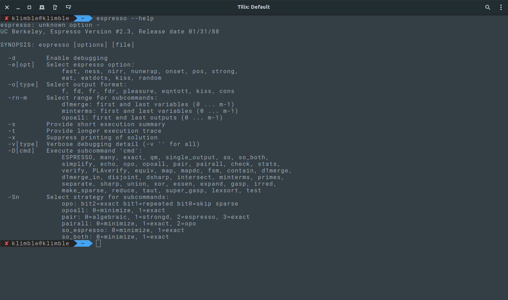

Espresso
Espresso is a program for boolean minimization. It takes as input a two-level representation of a two-valued (or multiple-valued) Boolean function, and produces a minimal equivalent representation. Espresso features a rich collection of commands to manipulate Boolean functions (see the user manual for their usage and description). Downloads
Available packages:Download binary tarball
The source code is available in both tarball and zip:
Download source (.tar.gz) Download source (.zip)
Before compiling it, make sure that you have the correct dependencies:
sudo apt install -y make build-essentialGNU Autotools, so you can compile directly with:
makebin directory will be created containing the binary.